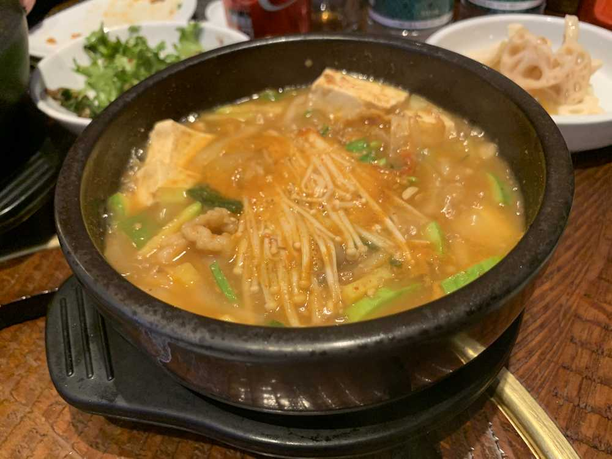

こんにちは😃
ひいだよ🍓

これはテンジャンチゲだったかな？？
美味しかったよ🤤
昨日はお腹の中のものを消化させるために
しばらく起きてたんだけど
ぜんぜん空っぽになった気がしなかった😶
でも眠さの限界で寝てしまった😴
だけど昨日は寝る前にあんまり
携帯触らなかったよ😳
その代わりに本をたくさん読んだ👍🏻
でもいま読んでる本かなり内容が難しい！！
難しいけど読み進めていくうちにわかっていくことがあって面白い😊
それから寝る前にストレッチしたおかげか
今日もぐっすり寝られた気がする😉
寝る前の読書とストレッチはもしかしたら
私に合ってるのかもしれません😌💭
お肉のあと二次会を隣の宿舎でやってたけど
ひいはもうお腹に余裕がなかったので
今回は不参加にしました😂笑
でもなこちゃんが楽しかったよ〜っていってたからまた今度あったら行ってみる！！
わたしはあんまり騒ぐタイプではないので
二次会参加したら果たしてみんなのテンションについていけるのだろうか😅笑
ただみんなを見ながらニコニコ座ってる
自分の姿が想像できるㅋㅋㅋㅋㅋㅋ
ではまたっ
된장찌개 였나??
넘 맛있었어요😋
어제 소화를 시킬 위해 평소보다 늦게 잤어요😴
그래서 방금 일어났어요ㅎㅎㅎ
굿 모닝~👋🏻
배고프지 않아서 그냥 커피를 마시면서 브이로그를 보고 있어요:)
이호는 (은) 뭐해요???
어제 많이 먹었으니까 운동도 해야되는데 몸이 무겁네🙂ㅋㅋㅋㅋㅋ
오늘도 날씨 좋죠???
그러면 밖에 나갈까...🤔
....아니야🙃
일단 다시 브이로그 보고 올게요ㅎㅎㅎㅎ
TMI도 조금 이따가~🙂
ばいばーい👋🏻
ひいまる🥟